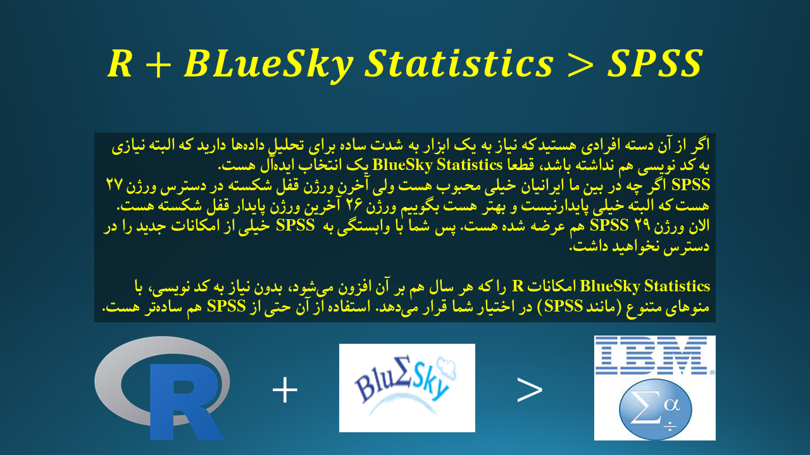
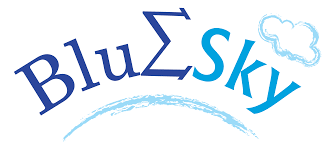
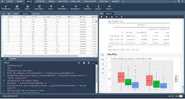
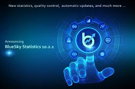

یک پروژه برای گسترش جامعه کاربری R
من در این پروژه قصد دارم به صورت ارائه چند فایل ویدئویی، نرمافزار BlueSky را به تمام دوستانی که قصد استفاده از یک نرمافزار ساده و منویی جهت انجام تحلیلهای آماری هستند، آموزش دهم. دلیل اصلی این موضوع برمیگردد به اینکه اصولا این نرمافزار برروی بستر زبانبرنامه نویسی R پیادهسازی شده هست و همچنین رایگان میباشد. پس میتوانیم به واسطه این نرمافزار از قدرت R در تحلیل دادهها و البته به شکل خیلی راحتتری استفاده کنیم. با توجه به اینکه اکثر جامعهی علمی کشور در تحلیل دادهها به سوی SPSS گرایش دارند، که ذکر دلایل آن خارج از این نوشتار هست، باید توجه داشت که نرمافزار SPSS یک نرمافزار رایگان نیست، و آخرین ورژن قفل شکسته آن که به راحتی قابل نصب باشد ورژن ۲۶ میباشد. در حال حاضر ورژن ۲۹ این نرمافزار منتشر شده هست. با توجه بهاینکه ویژگیهای خیلی زیادی به ورژنهای جدید نرمافزار SPSS افزوده شده هست که متأسفانه در دسترس ما نیست. چرا که نصب ورژنهای اورجینال این نرمافزار مبالغ زیادی را میطلبد. نرمافزار BlueSky یک جایگزین شایسته برای SPSSمی باشد، با ایننرمافزار میتوان هم از قدرت برنامهنویسی R استفاده کرد و هم به شکل بسیار چشم نوازی منویهای توانای نرمافزار ما را تا حد خیلی زیادی از کد نویسی به دور نگه خواهد داشت و همچنین با آپدیتهای به موقع از آخرین روشهای نرمافزاری در تحلیل داده بهرهمند خواهیم بود.
من جلسات مربوط به آموزش را در قالب ۳۲ جلسه تهیه کردهام. متأسفانه فایلها به صورت حرفهای ضبط نشده هست ولی تلاش شده هست که اطلاعات نسبتا جامعی درباره این نرمافزار در اختیار شما عزیزان قرار گیرد. قطعا بعضی ویدئوها نسبتا که نه، اکثر ویدئوها حجم زمانی بالایی دارند که برای ویدئوهای آموزشی، این یک ویژگی منفی هست. با همه این اوصاف باید اضافه کنم که تهیه این ۳۲ ویدئو یک فرآیند آسان برای من نبوده هست. البته علاوه بر ویدئوها به دلایلی که در ویدئوها هم ذکر کردهام، دو مبحث دیگر مربوط به برآورد pvalue برای آزمونها چندگانه و همچنین شیوه محاسبه SSها در تحلیل آنالیز واریانس نیز اضافه کردهام، چون احساس کردم این مباحث میتواند مفید باشد و جای این مباحث در منابع فارسی را خالی دیدم.
لینکهای ویدئوها
- لینک اول: نحوه نصب نرمافزار
- لینک دوم: یک مقدمه بر نرمافزار
- لینک سوم: نحوه ورود دادهها به نرمافزار.
- لینک چهارم: ترسیم نمودار StripPlot با نرمافزار.
- لینک پنجم: نمودار میلهای
- لینک ششم: نمودار جعبهای
- لینک هفتم: نمودار کانتور پلات
- لینک هشتم: نمودارهای بررسی توزیع (منحنی چگالی، نمودار چندکچندک و نمودار احتمالاحتمال).
- لینک نهم: نمودار HeatMap
- لینک دهم: نمودار LineChart
- لینک یازدهم: ترسیم Map و PieChart
- لینک دوازدهم: نمودار ScatterPlot و ViolinPlot
- لینک سیزدهم: یک مقایسه با SPSS
- لینک چهاردهم: تولید داده تصادفی در نرمافزار BlueSky بههمراه بررسی خوبی و برازندگی دادهها با یک توزیع خاص و آزمون نرمالیتی به همراه مقایسه با نرمافزار SPSS
- لینک پانزدهم: آزمون Ttest در BlueSky و SPSS به همراه Reshape کردن دادهها
- لینک شانزدهم: آنالیز واریانس، قسمت اول
- لینک هفدهم: آنالیز واریانس، قسمت دوم؛ به همراه مقایسه با نرمافزار SPSS
- لینک هجدهم: آنالیز کواریانس؛ به همراه مقایسه با نرمافزار SPSS
- لینک نوزدهم: آنالیز واریانس چند متغیره به همراه مقایسه با نرمافزار SPSS یا همان (MANOVA)
- لینک بیستم: تحلیل دادههای با اندازهگیری مکرر (Repeated Measure Anova) به همراه مقایسه با نرمافزار SPSS قسمت اول
- لینک بیست و یکم: تحلیل دادههای اندازهگیری مکرر (Repeated Measure Anova) و همچنین تغییر شکل دادهها از حالت Long به Wide و برعکس به همراه مقایسه با نرمافزار SPSS، قسمت دوم
- لینک بیست و دوم: آزمون کای دو برای جداول توافقی و آزمون مکنمار قسمت اول
- لینک بیست و سوم: آزمون کای دو، مقایسه با نرمافزار SPSS قسمت دوم
- لینک بیست و چهارم: آزمون کرسکالوالیس و آزمون فریدمن به همراه مقایسه با نرمافزار SPSS
- لینک بیست و پنجم: آزمون ویلکاکسون به همراه مقایسه با نرمافزار SPSS
- لینک بیست و ششم: Compute Variables
- لینک بیست و هفتم: رگرسیون خطی با نرمافزار BlueSky Statistics
- لینک بیست و هشتم: رگرسیون لوجستیک و ترسیم نمودار ROC برای رگرسیون لوجستیک به همراه پیادهسازی آزمون Hosmer LemeShow و ماتریس آشتفتگی (Confusion Matrix) مدل
- لینک بیست و نهم: مقایسه مدلها، پیادهسازی مدل های طبقهبندی و همچنین استفاده از شبکههای عصبی به همراه به دست آوردن مقادیر احتمال برآورد شده مدلها و مقایسه نمودارهای ROC برای وقتی که متغیر پاسخ باینری هست.
- لینک سیام: ماتریس همبستگی و آزمون همبستگی در BlueSky Statistics
- لینک سی و یکم: فیلتر کردن دادهها در BlueSky Statistics
- لینک سی و دوم: تحلیل بقا در BlueSky Statistics، منحنی کاپلان-میر و رگرسیون کاکس